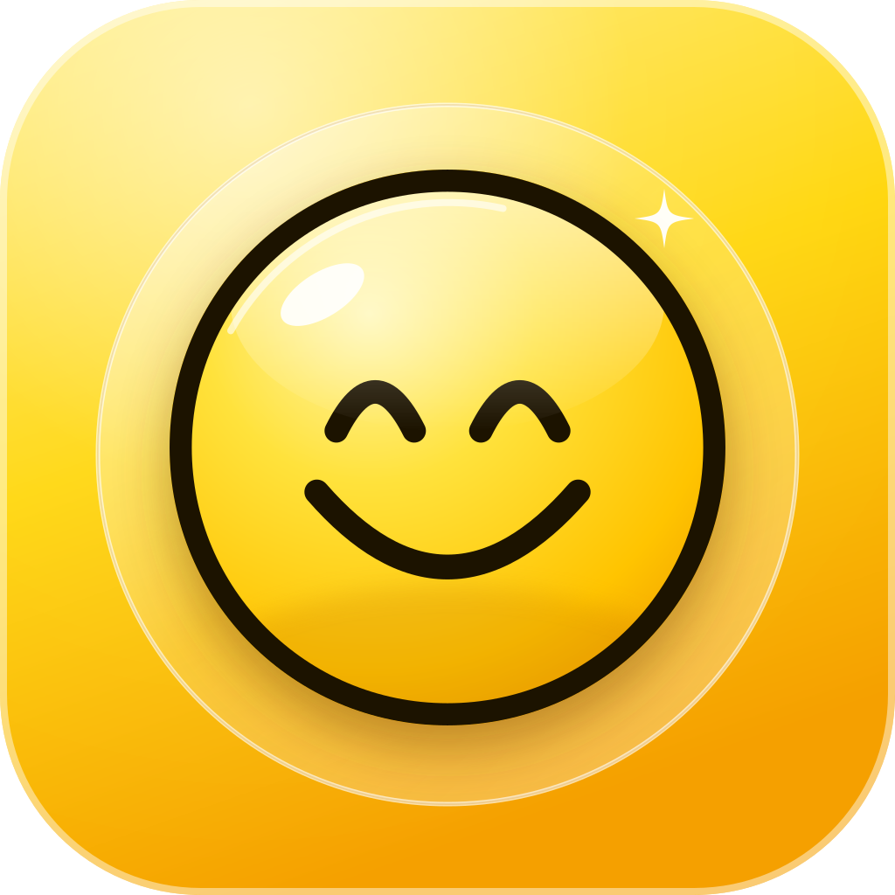
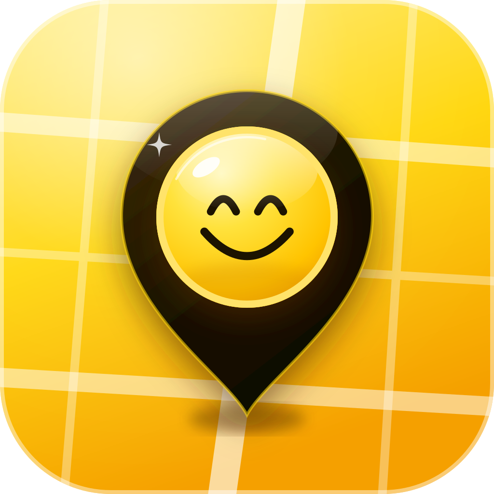
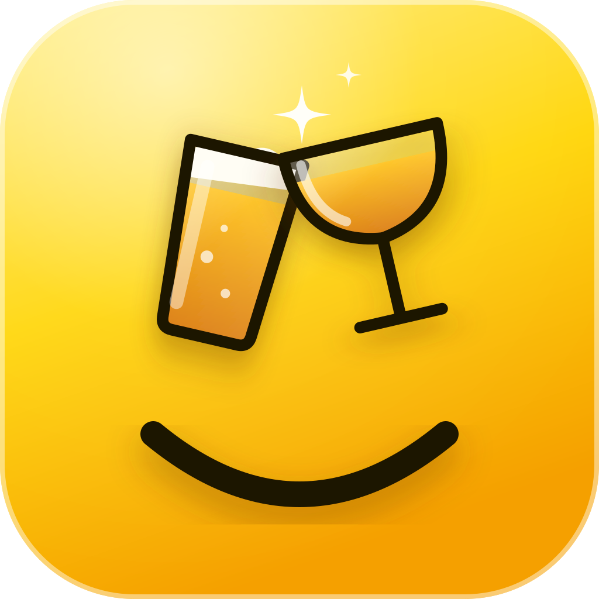
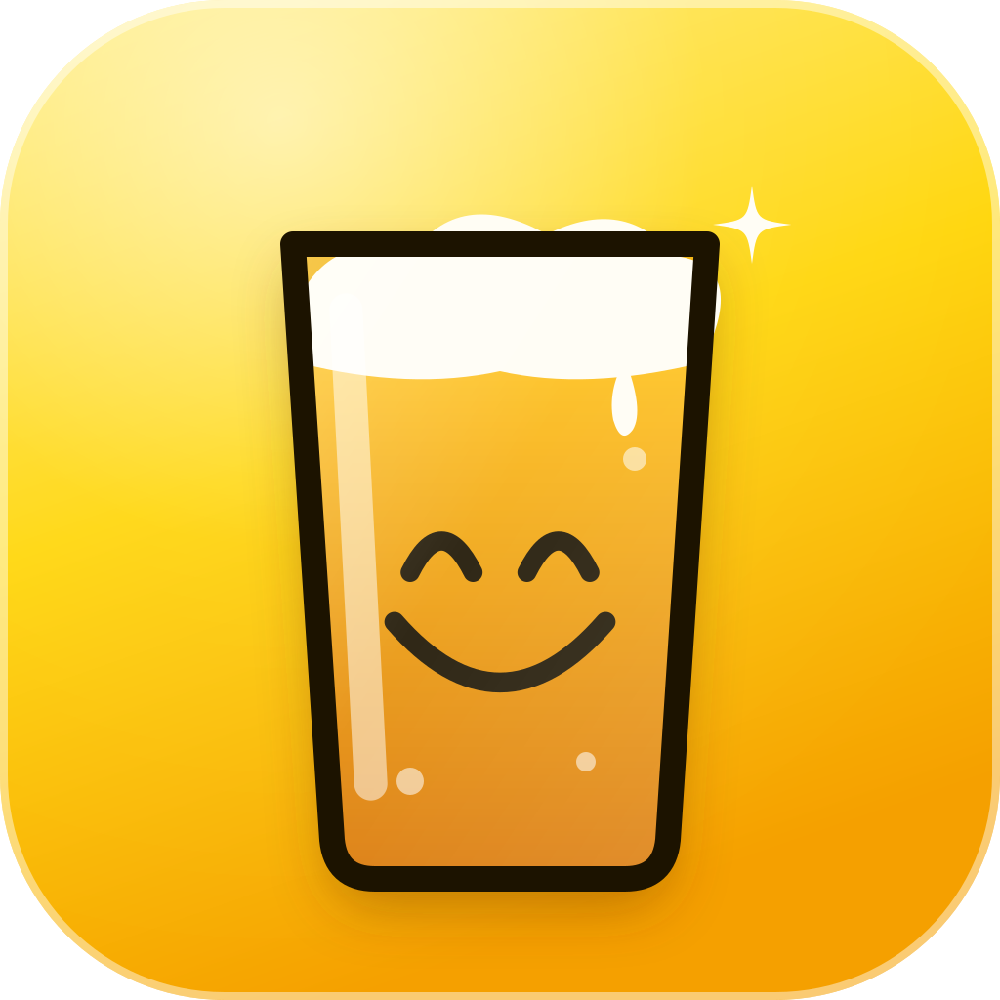
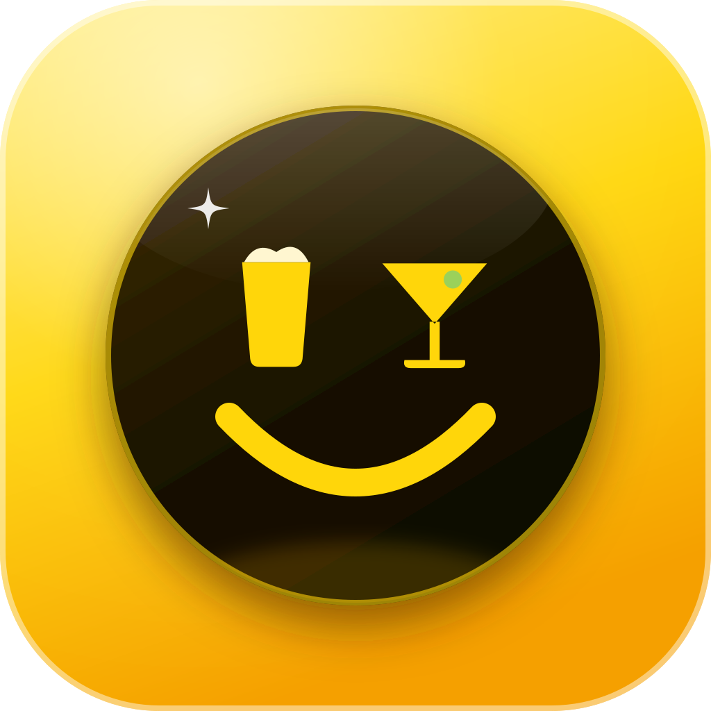

Happy HR icon directions
Honey yellow, a raised ink-outlined smile, and Liquid Glass light. Bottom row: actual home-screen size.

1. Glass smileThe smiley alone, raised on a glass disc. Calm and classic.

2. Happy pinApple Maps' pin on a honey street map, with the smiley inside.

3. CheersA pint and a coupe clinking over the smile.

4. Smile in a pintOne glass of beer; the smile is in the bubbles.

5. Night glassA black glass disc on honey; the eyes are a pint and a martini.On a home screen
1
2
3
4
5